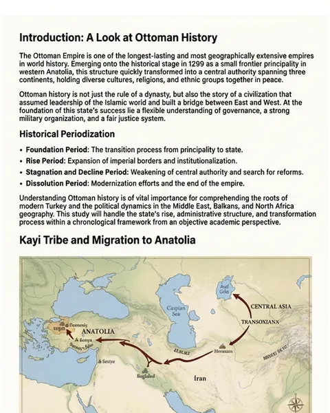
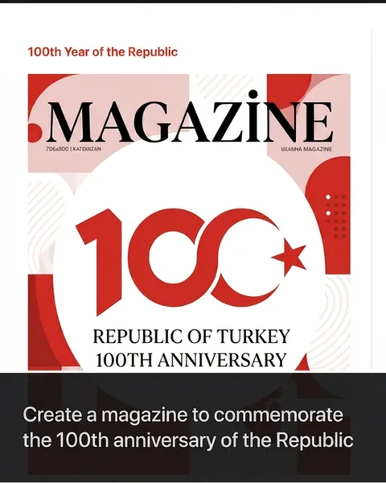
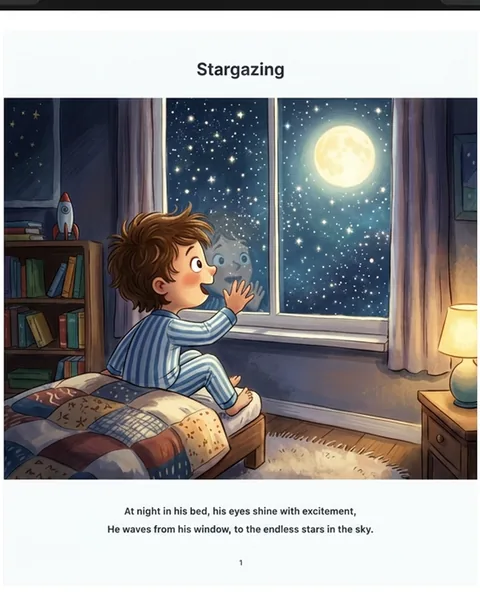

Turn any PDF or topic into a visual study document.
Upload your lecture notes or type what you're studying. Tasvir plans and writes a 25+ page illustrated document you can read, edit, print and share.
Create your first document — freeYour first document is free · No credit card · Any language



Real pages from real Tasvir documents — not mockups.